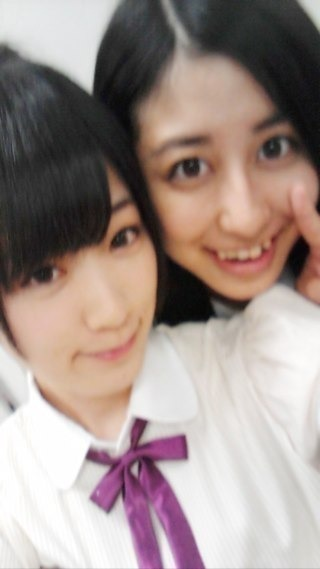
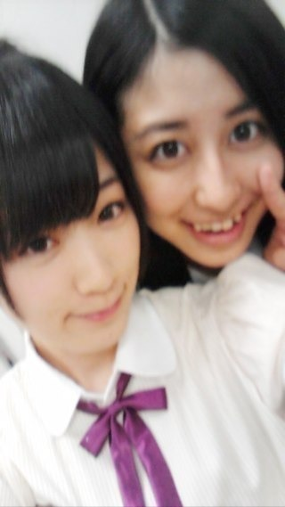

2012/1015Mon（´-`）.｡oO(かずみん×106
こんにちは( ´ ▽ ` )ﾉ
いつも応援ありがとうございます！
走れ！bicycleの全握、
無事に終了いたしました！
来てくださった皆さん、
本当にありがとうございました(*^^*)
久しぶりで緊張しましたが、
皆さんとお話できてとっても
嬉しかったです\(//∇//)\
ポジティブやアメイジングを
沢山の方が言ってくださって
楽しかった！
プレゼントも当日に受け取りました！
皆さんセンスが素晴らしくて
高山好みの可愛い物が沢山(T_T)ハート
本当にありがとうございました(^^)

ちーちゃん最高＼(^o^)／
------
昨日は乃木どこでしたね♪
ちなみにああ見えても昨日放送のは
スランプ前のです(´･_･`)
普段から上手に喋れてませんが、
次からの2つはこの前収録した
回なので、ある意味お楽しみに...
昨日のボードの鼻と口の絵は
なぁちゃんが
書いてくれたんです^^
児童会は小4の時に入ってました！
生徒会長はですね〜
中学生の頃に立候補しました(｡-_-｡)
懐かしいなぁ...
友達にポスターを作って
もらったりして！
でも落ちました〜(°▽°)
うちの学年は女子が少なかったから
票数負けは仕方ない(￣▽￣)
と負け惜しみします。笑
嘘です！
私が生徒会長だったら
ごちゃごちゃになったであろうから
みんな票を入れなかったんだと
思います！！
今となっては...いい思い出ですね♪
あと昨日の乃木どこで
東京タワースタジオでの収録が
最後でした(T_T)
今までありがとう、東京タワー！
-----
この前はみゅうみゅうとまいまいと
"紅芋ミルクティータピオカ"を
飲みに行きましたよ(*^^*)
ガジ美味しかったです♪
かぼちゃーず3号の高山ですが、
紫芋も大好きです♪
紫って乃木カラーだしね！
食欲の秋ですよ...
今日も陽菜ちゃんとカボ活！
あと私は色がついた食べ物が
大好きなんです！
体にはあまり良くないらしいですが...
メロンソーダとかチョコミントとか♪
見た目が可愛い物は食べたく
なっちゃいます\(//∇//)\
チョコミントは水色だから◎
ですね！笑
皆さん！ぜひ水色の食べ物があったら
高山に教えて下さい(*^^*)
↑そんなのあるか！！
さて、今日はこの辺で( ´ ▽ ` )ﾉ
おやすみなさい...★
いつも応援ありがとうございます！
走れ！bicycleの全握、
無事に終了いたしました！
来てくださった皆さん、
本当にありがとうございました(*^^*)
久しぶりで緊張しましたが、
皆さんとお話できてとっても
嬉しかったです\(//∇//)\
ポジティブやアメイジングを
沢山の方が言ってくださって
楽しかった！
プレゼントも当日に受け取りました！
皆さんセンスが素晴らしくて
高山好みの可愛い物が沢山(T_T)ハート
本当にありがとうございました(^^)

ちーちゃん最高＼(^o^)／
------
昨日は乃木どこでしたね♪
ちなみにああ見えても昨日放送のは
スランプ前のです(´･_･`)
普段から上手に喋れてませんが、
次からの2つはこの前収録した
回なので、ある意味お楽しみに...
昨日のボードの鼻と口の絵は
なぁちゃんが
書いてくれたんです^^
児童会は小4の時に入ってました！
生徒会長はですね〜
中学生の頃に立候補しました(｡-_-｡)
懐かしいなぁ...
友達にポスターを作って
もらったりして！
でも落ちました〜(°▽°)
うちの学年は女子が少なかったから
票数負けは仕方ない(￣▽￣)
と負け惜しみします。笑
嘘です！
私が生徒会長だったら
ごちゃごちゃになったであろうから
みんな票を入れなかったんだと
思います！！
今となっては...いい思い出ですね♪
あと昨日の乃木どこで
東京タワースタジオでの収録が
最後でした(T_T)
今までありがとう、東京タワー！
-----
この前はみゅうみゅうとまいまいと
"紅芋ミルクティータピオカ"を
飲みに行きましたよ(*^^*)
ガジ美味しかったです♪
かぼちゃーず3号の高山ですが、
紫芋も大好きです♪
紫って乃木カラーだしね！
食欲の秋ですよ...
今日も陽菜ちゃんとカボ活！
あと私は色がついた食べ物が
大好きなんです！
体にはあまり良くないらしいですが...
メロンソーダとかチョコミントとか♪
見た目が可愛い物は食べたく
なっちゃいます\(//∇//)\
チョコミントは水色だから◎
ですね！笑
皆さん！ぜひ水色の食べ物があったら
高山に教えて下さい(*^^*)
↑そんなのあるか！！
さて、今日はこの辺で( ´ ▽ ` )ﾉ
おやすみなさい...★
2012/10/15 21:42


コメント(517)
せいたん推しのshoでした。
アメイジング一緒にやってくれてありがとう！(*´∀｀*)
紫キャベツなら身体にいいよ（笑）
こんばんは＼(^_^)／
イェイ、ポジティブ♪
昨日の全握長時間
お疲れさまでした(^-^)v
やっぱりかずみさんと話すのは楽しい～
かぼちゃと芋のスイーツってなんか似てるよね
どっちも好きよ～
明日も頑張ってな！いつでも応援してんで～
ふぁいっと！！
お疲れ様です(>_<)
てっきりかずみんが描いたんだと思ってました（笑）
お土産受け取ったかな？
気に入ってもらえるとうれしいです。
かずみさんに日本に帰ってきて1番最初に会えて嬉しかったよ。
一枚しかなかったけど、本当に会えてよかった。
27日楽しみだー
似てたよ。
中学校の時は、
野球やっててイケメンの人が生徒会長になってたな。
全握お疲れ様ですね。
沢山の人が集まって盛り上がって良かったね。
楽しかったなり！
あと乃木どこ？観たよ。
大縄飛び頑張ってたね。
ラストチャンスで２回って！(笑)
どんまい乃木坂！！
あっウインク(^_-)！！
かずみんウインクありがたやありがたや！！
最高ですね。
横浜の個握も行くからね。今から楽しみやん！
ばいなら！
p(^^)q
全握行きたかったよぉ～･･･
予定さえなければ･･･
昨日の乃木どこ?のかずみんに東京タワーありがとうが気になってましたｗ
なんか、スッキリです^^
かずみんの生徒会長･･･。
ただただ、皆元気になりそう･･･ﾜﾗ
そしてよくわからない味がしたりして面白かったり♪
北海道のだい
かっ可愛い(≧∇≦)
頑張っ＼(^o^)／
乃木どこうしろの所でもかずみはかずみだよ。
応援しとるよぉ＊(・×・)
昨日の乃木どこのボードの絵は地味だけど面白かったわ笑
水色の食べ物かあ。オホーツク海カレーとか水色だった気がする笑
食べ物じゃないけど、長野の上高地の川とか北海道の美瑛の青い池とかは水色でまじ綺麗だよ！
では、明日も頑張りましょう！
握手お疲れ様～
いつも通りたのしかったわw
水色の食物とか何があるんやろ？
更新ありがとう(*^^*)
顔書いてるのおもしろかったwww
妹と2人で笑いまくってた（笑）
かずみんが喋ってるの見たら
元気になります)^o^(
つぐみ
かずみん こんばんは ( ´ ▽ ` )ﾉ
握手会＆ミニライブおつかれさま！
田舎に住んでて
そういうイベントにはなかなか参加できないけど
いつも応援してるよ (*^^*)
ポジティブやアメイジングも自分の中ではいま流行語！笑
乃木どこ映らないから昨日の分まだ見てない(>_<)
このあと寝る前にネットで見るつもりだから
楽しみにしとくね ＼(^o^)／
カボ活もしっかりしてるみたいやね♪
色の鮮やかなお菓子ってたしかに食べたくなる！
カラフルなマカロンとか美味しそうに見えて仕方ない\(//∇//)\
水色の食べ物…
う～ん なかなか思いつかんね (~_~;)
また見つけたらコメントでお知らせするよ(*^o^*)
今日も一日おつかれさま
おやすみなさい ( ^_^)/
握手お疲れ様～
いつも通りたのしかったわw
水色の食物とか何があるんやろ？
全握いいなぁ～！！
またかずみんに会いたい！
北海道にも来て欲しい！
カボチャはまいうーだよね(*´∀｀)
煮付け、天ぷら、コロッケ
美味しい食べ方がいっぱい＼(^o^)／
少しずつ寒くなってきたね。。
冬はお鍋だねっっ(･∀･)
アラサー女子より☆
握手会お疲れ様*\(^o^)/*
おれも小5の時副会長に
立候補したけど落ちたんだよね(^^;;
かずみんと一緒でなんか嬉しいわ！
水色の食べ物かぁ
考えると出て来ないよね(>_<)
てかチョコミントしか思いつかない（笑）
握手会お疲れー!
私も東京の全握行きたかったな(ToT)
でも東京って人多すぎるからちょっと怖い・・・
来年になったら遠征たくさんするね!
プレゼントとかってちゃんと手元に届くんだ!
私のファンレターはまだ届かない?笑
もうね、かれこれ4、5通くらいはインフォメーションセンターに出したよ!
かずみんに読んでもらえますように(>_<)
ゆみちでした(・∀・)
ふたたびこんばんは＼(^_^)／
さっきの続きです
間違えて投稿ボタン押してしまいましたf(^_^)
ホントに楽しくて、実はここだけの話一実さんレーンは２回と決めていましたが６回並んでしまいました(*≧∀≦*)
自分でもおどろきです…f(^_^)
まいやんTシャツを着ているのを突っ込んでくれたり、ポジピースを一緒にしたり、同じ癖持ってるし(笑)
なんて魅力的なんでしょう。
今回は名前も伝えたし、次回覚えていてくれたらうれしいですね＼(^_^)／
実は『320』って『みつお』って読むんですよ(笑)
知ってました？？？
かずみんのお陰で元気回復しましたよ、これからも頑張って下さいね
でわでわ(^_^)/~~
こんばんは=^・^=
昨日の乃木どこ？の
ボードに書いてた
東京タワーありがとう♪
の意味がわかりました
あーすっきり(^^)v
次から２回がスランプなんだ！かずみんがスランプだなんて
アメイジング＼(^O^)／
どんな感じか楽しみにしとくねポジティブ＼(^O^)／
水色の食べ物ねー？
かずみん好きやもんね♪
かき氷のハワイアンブルーとか大玉飴のソーダ味くらいかな!?
かずみさん♪
おやすみ(*^^*)
またね(*・ｘ・)ノ~~~♪
おつかれさま！
久しぶりにガジ聞いた(笑)
全握行けなかったから、個握の楽しみがヤバイ(笑)
更新待ってたよー！
昨日は握手お疲れさま^^
また色々話せて楽しかったな♪
かずみんが『頑張ってもダメなんじゃないかって思っちゃう』って言ってたけど、そんなことはないからかずみんらしく、前を向いてポジティブ＼(^o^)／にがんばれ！
応援してるからな^^
乃木どこ見たよー
児童会懐かしかったなぁー(笑)
落ちちゃったのは残念だったね(笑)
カボチャーズ3号なんだ！笑
めっちゃ楽しそう(笑)
水色の食べ物かぁー、うん。思い浮かばない(笑)
握手会おつかれ坂(^^)/
あんなに絶好調な感じやのに
とてもスランプになるとは思われへんけど(>__<)
ではおやすみ(^^)/~~~
ほなまたねー(o^^o)
かずみんのレーン行きましたよ
アメイジングをやろうかどうか迷ったけど、今回僕はかずみんと握手するのが初めてだったので、とりあえず普通に挨拶しました
次回以降はアメイジングやるので一緒にやっていただけると嬉しいです
では、またどこかのイベント会場で会いましょう
ライブはAグループの前の方だったから、かずみんの顔よく見えたし最高だった!!
昨日は楽しすぎた！アメージング♪
俺のカボチャは届いたかな!?
ってか、かずみん３号だったんだ。
勝手に１号だと思ってた。
水色のたべものはーガリガリ君ときなー
あとは、甘エビのたまごが水色(青かも、でも、ポジティブにいこうぜ、つかいかたあってるかな？)かな
乃木どこ観たよ―
相変わらずかずみんはおもしろいなー
自分は小学生のころ児童会長をしておりました
皆をまとめるということは難しいものですねー
今は中２ですがなにもやってません
いまは剣道に専念してますので
じゃあそろそろ寝ますー
かずみん、スランプとか気にせんでいいけんな
ポジティブにがんばっていきやしょー
では
。。。じゃないな。公演の自己紹介でめっさ笑わせて貰って、コメントした事あった
昨日の絵＆コメントは、そんな流れやったんや〜
楽しい裏話、ありがとう
昨日楽しかったー！
二回だけだったけど会えて話せて嬉しかった！
ミニライブも見れるしね（´(ｪ)｀）
言ったけどやっぱ音がでないギターの表情かっこいいよ！
笑顔がいい人のクールな表情っていうギャップ。笑
横浜もよろしくおねがいしまーす！
秋はほんと美味しいもの多くて困るね…
私は総括して食べ物部に入りたいわ…(ずるい)
立候補して落ちた…んーー 納得(笑)
なにやら、水色のパスタがあるそうですよ！
アメイジング＼(^o^)／
ほかにも カレー風味の黄色いパスタ
イカスミの黒いのとか
あと 赤 紫 緑 など
んじゃっ、マルカトーレ!!
アメイジング＼(^o^)／
昨日の乃木どこ、もちろん見ましたよ！！
東京タワーありがとうって、そういうことだったんですね。
どういう意味なのか気になっていました。
かずみさんのフリップ芸はなぁちゃんとのコラボだったとは（笑）
すごく面白かったです。
そしてもちろん、ガジ可愛かったですよ～！！
水色の食べ物、ネットで調べてみました。
ガリガリ君のソーダ味、スライム肉まん、沖縄のイラブチャーという魚などなど・・・いろいろあるみたいですけど、やっぱり人工のものが多いみたいですね。
かずみさん、ポジティブsay！！ですよ！！
普段かずみさんから言われてポジティブにしてもらってますから、今度は僕たちファンがかずみさんに言う番ですね！
ポジティブsay！！sayポジティブ！！
いつも応援していますよ☆
かずみん超絶かわいかったよ！！！
また会いに行くね！！
乃木どこ？観ましたよ！
かずみんがしゃべると必ず笑いが起こるから
さすがです！！
かずみんが生徒会長だったら
楽しそうでいいと思うんだけどなぁ。
やっぱり芋の季節だよね
焼き芋するしかーヽ(・∀・)ノ
かずみんが生徒会長だったらそれはそれでおもしろそう(笑)
飲み物で1番好きなのメロンソーダだよー
大好きだけど絶対体に良くない・・・
初全握参加でしたが、大変な賑わいでしたね(*´∀｀*)
すでに何回も全握を体験されているメンバーやファンの皆さんは
乃木坂46が着実に人気を獲得している手応えを感じているのでは
ないでしょうか？いや、ホントに凄かった。
自分はライブも初体験だったわけですが、やはりフルレングスの
ライブを観たい。
いずれその機会もやってくることでしょうけど待ちきれないですヽ(´ρ｀)ﾉ
水色の食べ物って・・・
砂糖菓子的な物であった気がしますが、そもそも青系統の色って
食欲減退するからなぁ…
見つけたら報告します。
それでは( ´ ▽ ` )ﾉ~
水色の食べ物食べたよ！
ガリガリ君ソーダ(笑)
ぜひ食べましょう( ￣▽￣)
全握おつかれさま(^^)伝言伝えてくれたみたいでホンマに感謝です‼
握手会でみんなに会えて元気もらえたみたいやね。もちろんファンのみんなも元気100倍やで（笑）
握手会って良いよね～自分がいかれへんかったのが悔しいわ(>_<)
かぼちゃーず３号なんやwwてかさっそく紫芋に浮気してるやん！
生徒会長の話にはあえて触れとくな（笑）
今回の乃木どこ？も良かったよ！あれだけ抜かれたらこっちとしては安心して観てられるねんけどな…
スランプの時はあんまり考え過ぎんと自然体が一番やと思うよ(´･_･`)
それが難しいのは俺もよくわかってるつもりやけど。
かずみんなら大丈夫。
PS.水色じゃないけどブルーハワイとかいかが？
体調に気を付けてね。
かずみんひどいよ～(ToT)w
俺の事忘れかけてたでしょ～？(ToT)w
次行くときまで覚えててね！
ライブ最高だったよ！
俺の中でかずみんが一番輝いてた！
やっぱかずみんスゲー！
レッスンとかポジティブに頑張ってね！
一実大好きだゼゼゼゼゼ～ィ！w
かずみん、こんばんは＊
握手会お疲れ様♪
行けなかったけど、いつか行ってかずみんと話したいなぁ…
乃木どこみたよー
顔すごく面白かったｗ
最後の象のとき「東京タワーありがとう！」ってかいてたように
見えたけど書いてた？
すごく面白かった＊
ポジティブSAY！
おつかれさまでした。
私も、ミニライブ行きましたよ。
踊っているかずみんに見とれてしまいました。
かずみんの躍り、とても素敵で大好きです。
握手会は、恥ずかしくて行けませんでしたー。
今度、勇気を出して行きますので、握手して下さいね。
あの顔はめちゃ面白かったわー
もっとバナナマンさんがいじってほしかった(笑)
真夏ちゃんとの15番勝負、かずみんがどんな対決したのか楽しみ＼(^o^)／
スランプに負けるな!かずみん!
私はかずみんが乃木坂で一番面白いと思ってるよ!
私も芋好きなんだよなー
だから秋は大好き＼(^o^)／
水色の食べ物ってあんまりないよね(笑)
ラムネくらい?笑
最近レッスンとかで忙しいかもしれないけど体調には気を付けてね!
ゆみちでした(・∀・)ニカイメ
全握いけなかったー( ; _ ; )
乃木どこ見ましたよ！
あの絵はなーちゃん書いてたのか！？
生徒会長に立候補するだけでも勇気あるとおもいますよ(^_^)
東京タワー最後なんだ…悲しいね( ; _ ; )
カボ活楽しんでください＼(^o^)／
ではー(￣^￣)ゞ
コメントする